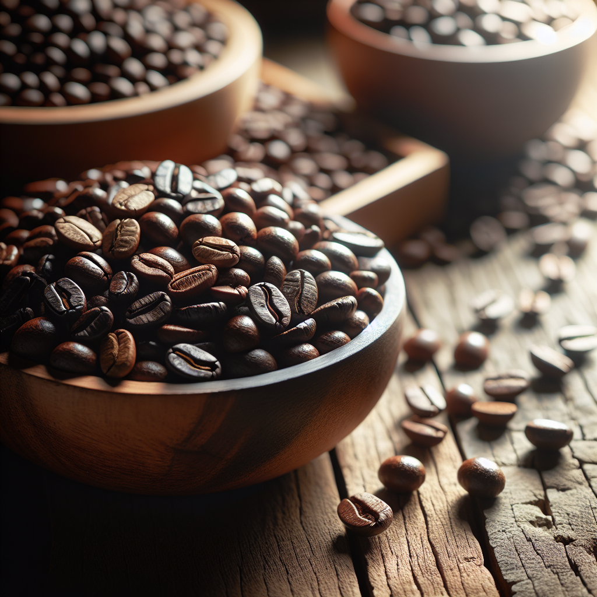

Coffee Beans
Discover the various types of coffee beans including Arabica, Robusta, Liberica, and Excelsa. Each bean offers unique flavors and aromas that contribute to different coffee experiences.
- Arabica: Known for its sweet, soft taste and higher acidity.
- Robusta: Has a stronger, harsher taste compared to Arabica and contains more caffeine.
- Liberica: Offers a unique smoky and floral aroma.
- Excelsa: Has a tart, fruity profile often used to provide complexity in blends.